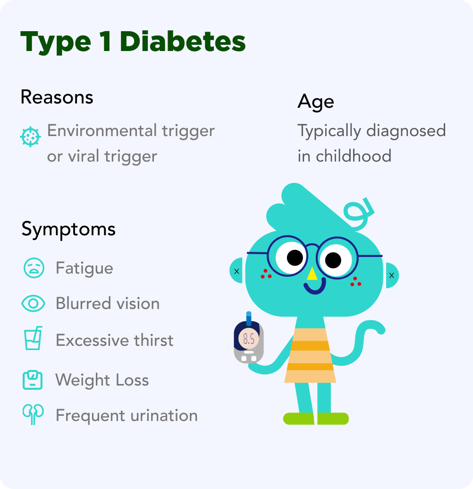
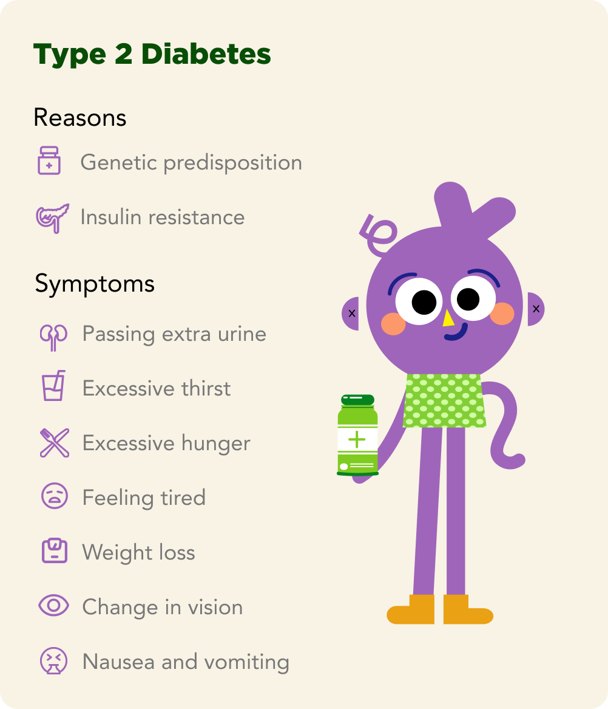

Glucose builds up in the blood leading to gyperglycemia.Diabetes affects the body’s ability to make or
properly use insulin.
Type 1 diabetes happens when your body does not make insulin. This means you have to take insulin through shots or an insulin pump.
Type 2 diabetes happens when your body cannot use the insulin it makes or when your body does not make enough insulin. You may have to take insulin or another type of medicine to keep your blood sugar in a healthy range.
Signs of diabetes occur because the body lacks insulin. This causes blood sugar to build up in the blood, leading to these signs:
Many, many factors- the ones we will discuss here are: